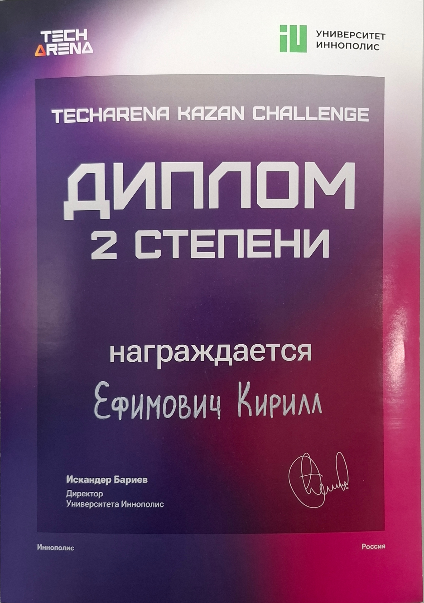
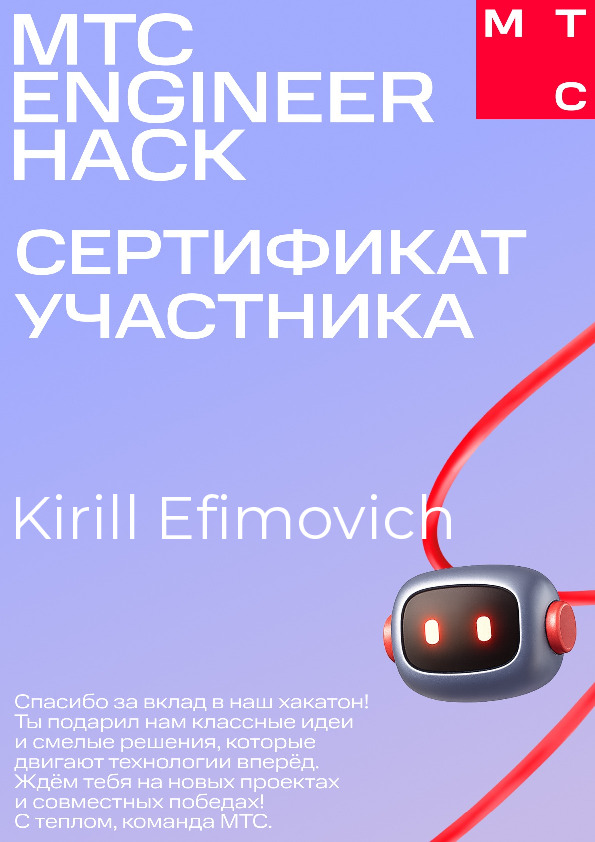
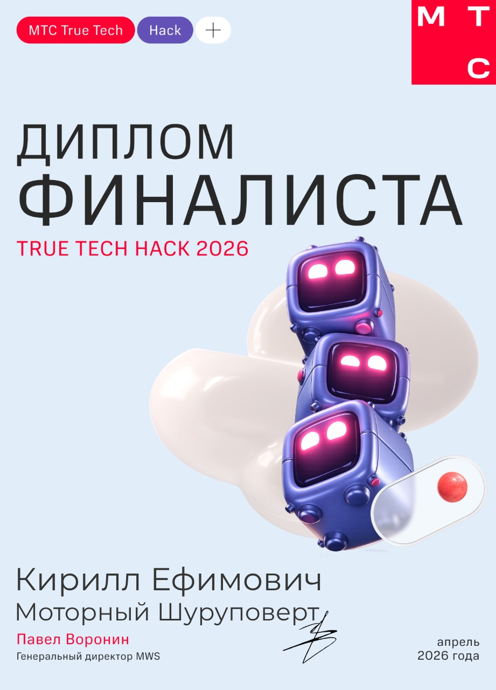

Сотрудничество и Командная работа
Мотивированный командный игрок, опыт работы в agile средах, распределение задач с коллегами.
Junior DevOps Engineer
+7 (916) 744-12-80DevOps инженер с 2+ годами практического опыта автоматизации CI/CD процессов и контейнеризации приложений. Специализируюсь на Docker, GitHub Actions и настройке инфраструктуры для веб-приложений. Быстро обучаюсь новым технологиям и стремлюсь к построению надежных автоматизированных решений. Интересуюсь интеграцией ИИ в свои сервисы.

2-е место

Финалист

DevOps инженер, Координатор команды
Мотивированный командный игрок, опыт работы в agile средах, распределение задач с коллегами.
Умение эффективно демонстрировать решения и коммуницировать идеи.
Навыки организации рабочих процессов и соблюдения дедлайнов.
Креативный решатель проблем, предлагающий инновационные решения.
Full-time DevOps стажер. Уверенно решаю поставленные задачи, работаю с контейнеризацией, CI/CD, Kubernetes и мониторингом.
Веб-приложение для планирования научных прогулочных маршрутов по Иннополису. Сервис объединяет интерактивную карту, точки интереса, построение маршрута через OSRM и несколько пользовательских сценариев: готовые лекции, кастомный маршрут и подбор маршрута по лимиту длины. GitHub | volgatrail-innopolis.vercel.app
Платформа для совместной работы с документами в реальном времени. Проект объединяет редактор с CRDT-синхронизацией, backend API для бизнес-логики и отдельный collab-сервис для realtime-взаимодействия. Репозиторий: github.com/motor-screwdriver/mts-true-tech-hack-26.
Учебный компилятор для императивного языка Language I с генерацией WebAssembly Text. Разрабатывал части compiler pipeline: AST, parser, semantic analysis, code generation и тестовые сценарии. GitHub
.i программы, .wat fixtures и скрипты для массовой проверки компиляции.Проектировал микросервисную архитектуру платформы для обмена знаниями. Руководил технической и организационной частью проекта в команде из 7 человек, организовал процесс разработки и внедрил Blue-Green Deployment стратегию. Репозиторий: github.com/IU-Capstone-Project-2025/open-labs-share.
Фреймворк для анализа логов из распределенных серверных систем. Работал с базами данных, безопасностью, CD деплоем на локальный сервер и координировал команду. Репозиторий: github.com/Linch-JG/Distributed-Log-Analysis-Framework.
Сайт для Департамента Образования Университета Иннополис для автоматического распределения студентов на выбранные элективы. Разработал REST API эндпоинты, координировал команду из 5 разработчиков, организовал code review процесс и настроил CI/CD pipeline, обеспечивший автоматическое тестирование и деплой. Репозиторий: github.com/quintet-sdr/elect-gen-backend.
Конструктор веб-сайтов для строительства загородных домов. Разработал REST API с 25+ endpoints, проводил тестирование через Swagger/Postman, подключил базу данных.
Кросс-платформенное приложение на Flutter, работающее с внешним API. Разрабатывал архитектуру приложения, вводил тесты и CI проверки, выполнял деплой в виде артефактов, также руководил командой. Репозиторий: github.com/Linch-mini/DishDash.
Настроил и поддерживаю личный игровой сервер с запуском самой игры и загрузчика модов на инфраструктуре Ubuntu. Настроил автоматизированные бэкапы и мониторинг производительности.
Создал и управляю домашней серверной инфраструктурой используя Docker контейнеры. Развернул различные сервисы включая веб-приложения, базы данных и инструменты мониторинга с автоматизированными пайплайнами развертывания.
Разработал несколько академических проектов комбинируя backend сервисы на Go с мобильными приложениями Flutter. Внедрил RESTful API, интеграцию с базами данных и кроссплатформенную мобильную разработку.
Языки: Русский (родной), английский (B2+). Участвую в командных проектах, стараясь проявлять лидерские качества, участвую в хакатонах.